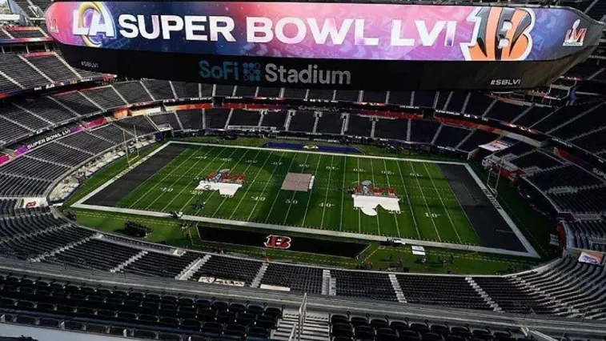
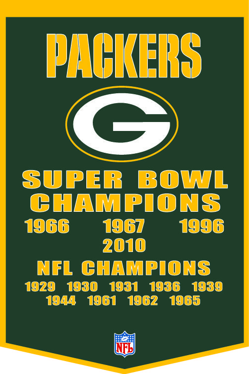

National Football League
A National Football League (NFL) é a liga esportiva profissional de futebol americano dos Estados Unidos. Consiste de 32 times, divididos igualmente entre duas conferências: a National Football Conference (NFC) e a American Football Conference (AFC). A NFL é uma das quatro grandes ligas esportivas profissionais estadunidenses e é o principal expoente do futebol americano no mundo. Sua temporada regular é jogada por dezessete semanas, de setembro a dezembro, com cada time jogando dezesseis partidas e tendo uma semana de folga. Após a conclusão da temporada regulamentar, seis times de cada conferência (quatro campeões de divisão e dois times de repescagem) avançam para os playoffs, em uma competição de morte súbita culminando na grande final, o Super Bowl, que normalmente é disputado no primeiro domingo de fevereiro e coloca frente a frente os campeões da NFC e da AFC.
A NFL foi formada na década de 1920 como a American Professional Football Association (APFA) antes de mudar seu nome e passar a ser conhecida como National Football League (ou Liga Nacional de Futebol [Americano]) em 1922. A NFL não era a única liga de futebol americano nos Estados Unidos e durante a década de 1960 nutriu uma rivalidade com a American Football League (AFL). Devido a inflação dos salários dos jogadores e outras questões (majoritariamente financeiras e de competitividade), as duas ligas rivais decidiram iniciar um processo de fusão, que começou em 1966, com o primeiro Super Bowl, uma partida entre os campeões de cada liga; a fusão foi completada em 1970.
Atualmente, a NFL é a liga esportiva com a maior média de público (67 591 por jogo) do mundo, além de ser também a mais rica. Desde a década de 1990, a NFL ainda é a liga esportiva mais popular dos Estados Unidos, líder em público, audiência na TV e lucros angariados. O Super Bowl é um dos eventos entre clubes esportivos com maior audiência no mundo e a final do campeonato é o evento mais assistido na televisão americana, com uma forte audiência mundial também. A direção executiva da NFL fica a cargo do seu comissário, eleito pelos trinta e dois donos de times, que tem a autoridade de governar o dia-dia da administração da liga.
O time da NFL com mais títulos é o Green Bay Packers com treze (nove antes da fusão com a AFL e quatro troféus de campeão do Super Bowl); já os times com mais anéis de campeão do Super Bowl são o Pittsburgh Steelers e o New England Patriots, com seis cada. O atual campeão da liga é o Los Angeles Rams, que derrotou o Cincinnati Bengals no Super Bowl LVI. Em termos financeiros, em 2016, o time mais rico era o Dallas Cowboys, com valor de mercado estimado em mais de US$ 4 bilhões de dólares (sendo a marca esportiva mais valiosa do mundo), segundo a revista Forbes.
